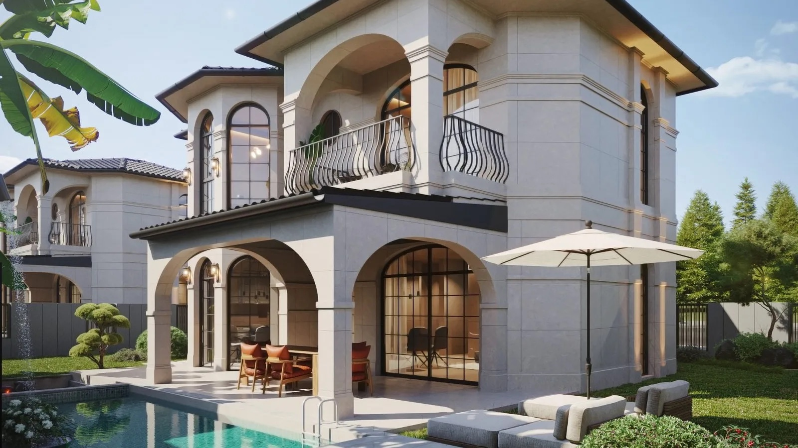
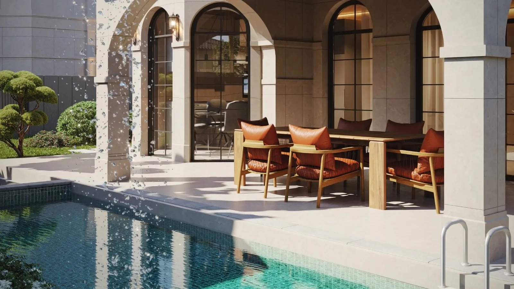
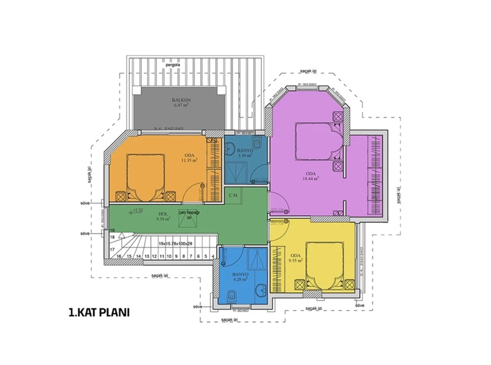

FU Yapı
FU Palazzo
Yavansu, Kuşadası

Sixteen detached three-bedroom duplex villas, each with a private pool. The developer lists 138 m² gross and 104 m² net areas.
01 / The project in images
Explore the spaces.
Selected original views from the developer’s project gallery.




Ground-floor source plan
Official source drawing, reproduced without redrawing. Confirm dimensions and specifications with the developer.
Download the source plan
Upper-floor source plan
Official source drawing, reproduced without redrawing. Confirm dimensions and specifications with the developer.
Download the source plan
02 / Project details
Yavansu, Kuşadası
For sale · planned delivery 31 May 2027. Source checked 6 October 2026; availability and dates require developer confirmation.
Your sales contact, in the same place
This example is not accepting enquiries. A published presentation includes the contact details and enquiry links you approve.